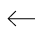

<div class="dialogBackground">
  <div class="dialogSquare">
    <div class="dialogContentWrapper">
      
      <div class="dialogMovieDetailsWrapper">
        <div class="dialogMovieDetails">
          <div class="dialogTitle">{{data.movie.title }}</div>
          <div class="dialodRuntime">{{formatRuntime()}}</div>
          <!-- <div class="rating" *ngIf="data.movie.rating as isNumber; else noRating">
            <mat-icon aria-hidden="false" aria-label="movie rating" fontIcon="star"></mat-icon>
            <span>{{ data.movie.rating }}/10</span>
          </div>
          <ng-template #noRating>Rating not specified</ng-template> -->
          <div class="rating">
            
            <span>{{ data.movie.rating }}/10</span>
          </div>
          <div class="description" [innerHTML]="sanitizedSynopsis"></div>
        </div>
        <button class="backBtn" (click)="onCloseDialog()">
          
          <!-- <mat-icon aria-hidden="false" fontIcon="arrow_left_alt"></mat-icon> -->
          <span>Back to list</span>
        </button>
      </div>
    </div>
  </div>
</div>
<!-- note that i put two comments in the template because for some reason the compiler
  complains about mat-icon here and i couldn't find a way to dix it );
  so i used img instead
 -->
